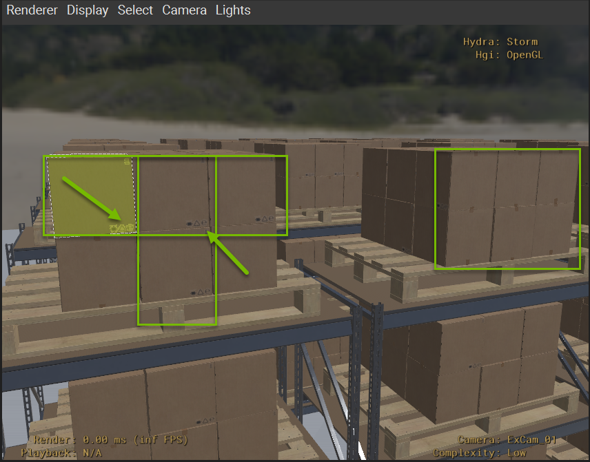
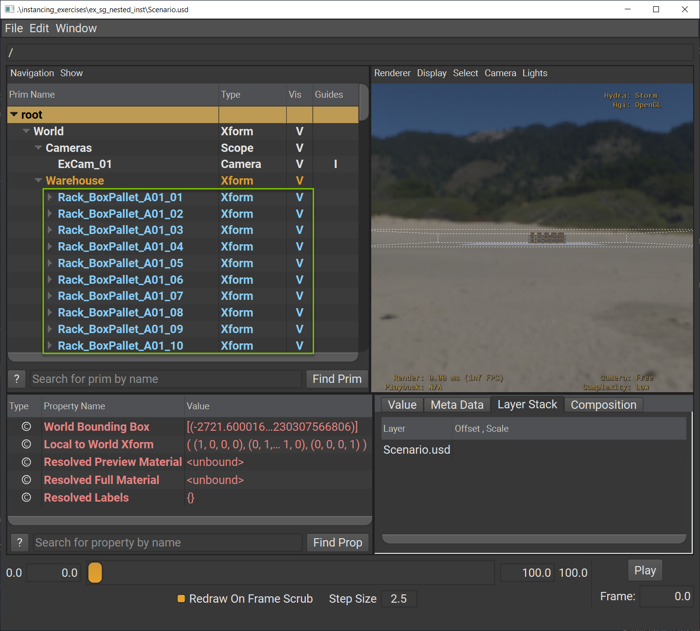

Exercise: Nested Scenegraph Instancing#
Introduction#
In this exercise, you will explore nested instancing by enabling instancing on rack assemblies that already contain instanced components. You’ll witness dramatic performance improvements while understanding the trade-offs between optimization and authoring flexibility, learning when nested instancing is most beneficial for complex USD scenes.
Exercise Steps#
Examine the Current State#
Let’s start by opening the warehouse scenario where we will be enabling nested instancing. We are starting from a state where the component models are already instanced. Let’s confirm this baseline state.
Run in the terminal:
Windows:
.\scripts\usdview.bat .\instancing\ex_sg_nested_inst\Scenario.usd --camera ExCam_01
Linux:
./scripts/usdview.sh ./instancing/ex_sg_nested_inst/Scenario.usd --camera ExCam_01
Tip
Click Camera > Select Camera > ExCam_01 if you ever lose your place in the scene or want to get back to this camera position.
Click on the top left box in the Viewport.
Hover your mouse over the Tree View panel and press the “F” key to frame the selected prim in the Tree View.
You should see “CubeBox_A04_26cm_18” selected in the Tree View panel. Note the light blue text indicating that we have instancing enabled for our component assets. In the next steps, we are going to utilize nested instancing and see how that impacts the stage.
Observe the decals on the boxes. The boxes with decals showing form a T-shape on the left pallet and the boxes on the right pallet have no decals showing. This visual diversity will be important to observe later. 
Close usdview.
Understand the Nested Instancing Script#
Let’s inspect the script we will be using to author the nested instancing.
Open
instancing/ex_sg_nested_inst/toggle_nested_inst.pyin VSCode to inspect its code.
16import argparse
17from pathlib import Path
18
19from pxr import Usd, Kind
20
21exercise_dir = Path(__file__).parent
22
23def set_nested_instancing(instance):
24 stage = Usd.Stage.Open(str(exercise_dir / "Scenario.usd"))
25
26 for prim in stage.Traverse():
27 # Check if the prim is a assembly asset
28 modelAPI = Usd.ModelAPI(prim)
29 is_assembly = modelAPI.GetKind() == Kind.Tokens.assembly
30 if is_assembly and prim.GetName().startswith("Rack_"):
31 prim.SetInstanceable(instance)
32 stage.Save()
33
34if __name__ == "__main__":
35 parser = argparse.ArgumentParser()
36 parser.add_argument("instance", type=int, default=1, choices=[0,1])
37 args = parser.parse_args()
38 set_nested_instancing(bool(args.instance))
This script is similar to the script from Exercise: Author Scenegraph Instancing, but it will enable and disable instancing based on a different criteria.
Key differences:
We are going to use assemblies as our points of interest for authoring scenegraph instancing
The assemblies contain instanced components to produce the nested instancing we desire
If you’ll recall from Exercise: Assets Overview, we have two assembly assets:
BoxPallet_A01
Rack_BoxPallet_A01
For the purpose of this exercise, the script will only enable instancing on the racks since BoxPallet_A01 is a part of Rack_BoxPallet_A01. This will give us fewer, but larger prototypes.
Tip
Experiment with instancing BoxPallet_A01 instead of Rack_BoxPallet_A01 to see how that impacts the statistics, performance, and authoring flexibility.
Enable Nested Instancing#
Run in the terminal:
Windows:
python .\instancing\ex_sg_nested_inst\toggle_nested_inst.py 1
Linux:
python ./instancing/ex_sg_nested_inst/toggle_nested_inst.py 1
With the 1 argument, this script now sets all Rack_BoxPallet_A01 assets in Scenario.usd to instanceable=true. Let’s open usdview to see what happened.
Run in the terminal:
Windows:
.\scripts\usdview.bat .\instancing\ex_sg_nested_inst\Scenario.usd --camera ExCam_01
Linux:
./scripts/usdview.sh ./instancing/ex_sg_nested_inst/Scenario.usd --camera ExCam_01
Observe that the Rack_BoxPallet_A01 prims are now instances (light blue text). 
Everything within those Rack_BoxPallet_A01 assets are now instance proxies (dark blue text).
Analyze the Impact on Stage Statistics#
Click Window > Interpreter to open the Interpreter window.
Run the following code in the Interpreter window:
1from pprint import pprint
2stats = UsdUtils.ComputeUsdStageStats(usdviewApi.stage)
3pprint(stats)
Scenario |
Prims |
Instances |
Prototypes |
|---|---|---|---|
No Instancing |
44408 |
0 |
0 |
Instancing |
1711 |
1450 |
3 |
Nested Instancing |
1482 |
25 |
1 |
Compare the statistics across different instancing strategies:
Key observations:
The total number of prims has decreased slightly
The total number of instances is now significantly less (25 vs 1450)
We only have one prototype based on Rack_BoxPallet_A01
Think About It
What would happen if you disabled instancing for one Rack_BoxPallet_A01? How many prototypes would you have? How many instances?
Close the Interpreter window.
Measure Performance Gains#
Let’s see those performance gains!
Run in the terminal:
Windows:
Measure-Command { .\scripts\usdview.bat .\instancing\ex_sg_nested_inst\Scenario.usd --quitAfterStartup }
Linux:
time ./scripts/usdview.sh ./instancing/ex_sg_nested_inst/Scenario.usd --quitAfterStartup
This will measure how long it takes to execute usdview. usdview is an interactive app, but with the --quitAfterStartup flag we can just time the startup and time to first frame with the Storm renderer. You can run the command a few times and take an average for a more reliable result. Our average was 5.31 seconds on a mid-end laptop. Compare the performance results across different instancing strategies:
Scenario |
Execution Time (sec) |
Improvement (%) |
|---|---|---|
No Instancing |
27.77 |
0% (Baseline) |
Instancing |
18.98 |
+46.3% |
Nested Instancing |
5.31 |
+423.0% |
The performance gains for leveraging nested instancing where appropriate are undeniable.
Conclusion#
You’ve successfully implemented nested instancing and achieved remarkable performance gains, improving this content’s load and rendering time by 423%. While this optimization comes at the cost of authoring flexibility, you will learn in the next modules how to strategically apply and refine scenegraph instancing to maximize performance in appropriate scenarios.